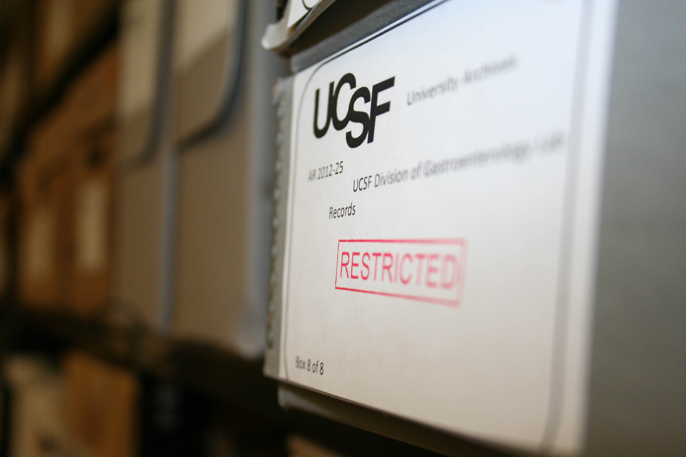
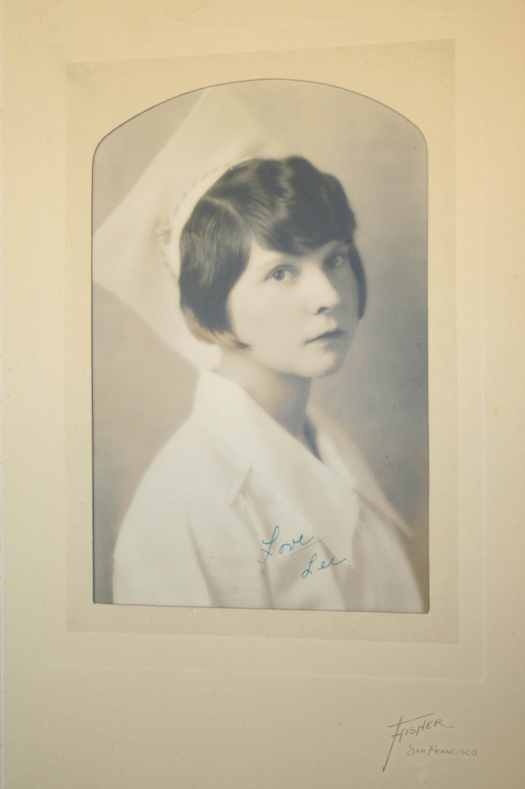
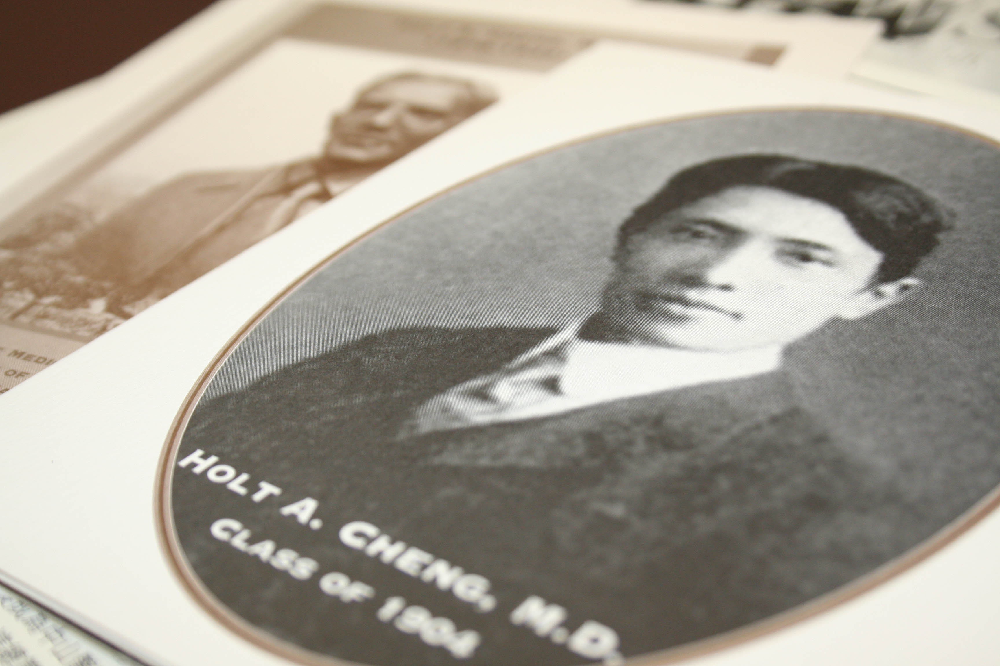

Hi everyone, my name is Armani Fontanilla and I am an undergraduate student at the University of San Francisco interning at the UCSF Archives and Special Collections.
At the archives, I am currently tasked with the processing of small box collections, or the creation of box level inventories and the digitizing, and creation of, metadata for the archives that have yet to be placed into the virtual catalog. Other projects that I am potentially tasked with are research for the upcoming 150th Anniversary of UCSF on the level of researching stories, scanning images, and looking for documents, as well as helping with the vast inventory of the Medical Artifacts collection.
It’s restricted for a reason. We can’t reveal why. All you need to know is Maggie has the really cool “restricted” stamp. It’s actually really cool.
Even though the potential projects are only potential projects, my senior co-workers, Maggie and Kelsi have both taught me a lot in the projects that I am currently working on. For example, Kelsi has taught me about her work with the Medical Artifacts collection: How the UCSF catalogs have changed from one form to another, and that cross-referencing catalogs with each new edition that has come through the library archives since 1864, one also has to decipher the writings and annotations of previous archivists, as well as come up with new ways to reorganize the collections in our possession.
Maggie, on the other hand, has taught me how to do the projects that I am currently doing, as opposed to the potential projects that Kelsi lets me shadow every so often. She has taught me proper labeling procedure, and storage techniques, as well as projects that mirror the one that Kelsi is currently doing, which would be creating catalogs for documents in storage.

Cataloging kind of like this, but more modern.
Finally, the first project (that I am still working on when I’m not being taught by Maggie or Kelsi, is the creation of a digital inventory of UCSF affiliates and members. Fortunately, most of the physical inventory is in English, and it is all on-site. Unfortunately, the physical inventory itself is not backed up – folders that are not archival standard need to be replaced, labels need to be printed out because of the inconsistent handwriting of previous archivists (and this intern’s), and more files need to be created for the ever expanding role of UCSF affiliated persons who are recognized in the news worldwide – from China, to America, to Brazil, to the Philippines, UCSF’s impact on the world is growing. And my first, and current job, is to help sort the files so that we can keep track of them for people to use and peruse in the future.

Before this data can hit the internet, I need make sure they’re all in order.
Within these jumbled folders, however, lie treasures that I am so excited to find. While often the files just contain one or two articles, some contain as many as ten plus! And these articles are often varied – they come in the form of obituaries, photocopied documents, magazine clippings, newspaper articles, biographies, and more! But instead of letting me describe them, let me show you some examples.

A button with 1989 Nobel Prize Winners Michael Bishop and Harold Varmus.

Brown, Leatha. School of Nursing, Class of 1928.

Holt A. Cheng, 1904. He was the first Chinese to be licensed to practice medicine in California after graduating from the College of Physicians and Surgeons in San Francisco. After returning to China, he established the Guang Hua Medical Society, the first medical college of western medicine established by the Chinese, for the Chinese, and the first medical school to accept female applicants.
And finally, the UCSF archives are not only home to just Western schools of thought in medicine, but include Eastern Thought as well. On site and in a state-of-the art archival room, various Eastern texts in Chinese and Japanese are stored, either purchased by the Head Archivist, donated to UCSF, or willed by their owners.

Chinese medical texts in the archival room.
Armani is currently a senior majoring in History with an emphasis on European and Asian Studies in the University of San Francisco (USF) public history program. After he graduates, he hopes to be able to earn a teaching position at his old high school, Bellarmine College Preparatory, and eventually pursue a Masters. In choosing the UCSF archives through the USF internship program, he hopes to not only practice skills that can only be found through working at an established institution but to also enhance his ability to do archival work and explore history of Western medicine at the archives.


{kind=link}
{kind=link}
{kind=link}
{kind=link}
{kind=link}
{kind=link}
{kind=link}
{kind=link}
{kind=link}
{kind=link}
{kind=link}
{kind=link}